QuickOrder
QuickOrder
|
Quick Order - Manual - Shop - Licence: Once-off - Translations : Translations outstanding |
Simplify your product ordering process with our "Quick Order" plugin. This plugin offers a quick and convenient method for ordering products from your PC or using a handheld PC or smart phone (through Remote Desktop / Terminal Services or RDP).
- You walk with a handheld through your warehouse, and scan or selected the product to order while standing next to the shelf.
- You see immediately actual stock numbers so that a good decision of the quantity to order can be made.
- After pressing a button it creates an order with the specified numbers.
- After which only a few clicks of the mouse will break down the order by vendor.
Optimize your ordering workflow with the "Quick Order" plugin, providing you with a seamless and efficient solution for managing your product orders.
Activation
To activate the QuickOrder plugin:
- On the Setup ribbon, select Plugins → Stock plugins → QuickOrder. If this plugin is not listed under Plugins → Stock plugins, activate it via Tools → Activate plugins.
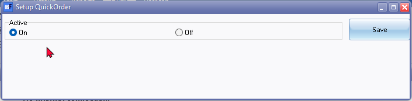
- On the Setup OuickOrder select On and click Save. Reopen the "Setup QuickOrder" screen to change additional settings.
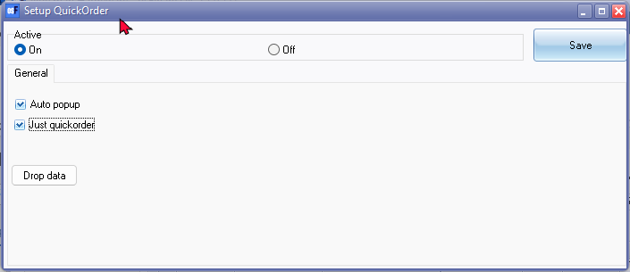
- The configure options, is as follows:
- Auto popup: By default, the QuickOrder screen launches when you reopen the Set of Books. To disable this and manually launch the QuickOrder screen, uncheck the "Auto popup" field. You can then manually launch the QuickOrder plugin from the Quick order icon on the Default ribbon.
- Just quickorder: If this option is not selected, the entire QuickOrder module (comprising three tabs: List, Generate documents, and Orders) will launch. If selected, only the Orders option will launch.
- Click Save. Reopen your Set of Books for these settings to take effect.
Drop data
If there are no items ordered in the List tab, you have the option to drop the data in the "QUICKORDER" table.
To drop data:
- On the Setup ribbon, select Plugins → Stock plugins → QuickOrder. On the "Setup QuickOrder" screen, click the Drop data button. A confirmation message will be displayed:
"Are you sure you want to delete all data ?"
- If you are absolutely sure, click Yes. Another confirmation message will be displayed:
"Warning you are about to delete table QUICKORDER with 1 records realy continue? "
- If you are still sure, click Yes.
NOTE: If the message indicates there are records (e.g., "1 record" as in the example), you may encounter an error message like:
"Unsuccessful metadata update.
Object QUICKORDER is in use."
To resolve this:
- First, delete the records in the List tab.
- Reopen your Set of Books.
- Once the Set of Books is reopened, you can proceed to drop the data (delete the "QUICKORDER" table).
Default ribbon icon
Once you have reopened your Set of Books, the Quick order icon will be available on the Default ribbon.
- If "Auto popup" is selected in the Setup QuickOrder, the QuickOrder will automatically launch when you open your Set of Books.
- If "Auto popup" is not selected, or if you have closed the QuickOrder plugin, you can manually launch it from the Quick order icon on the Default ribbon.
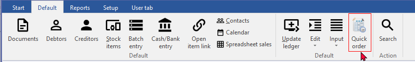
QuickOrder
When the Quick order plugin is initiated, and the "Just quickorder" option on the "Setup QuickOrder" screen is not selected, the entire QuickOrder module (comprising three tabs: List, Generate documents, and Orders) will be available.
List tab
- Click the Search button to list all your stock items (products). You may filter and search by options such as Reporting Group 1 (Stock Group 1) or Reporting Group 2 (Stock Group 2). For example, if you select "Powertools" as Reporting Group 1, the list will focus specifically on items linked to "Powertools."
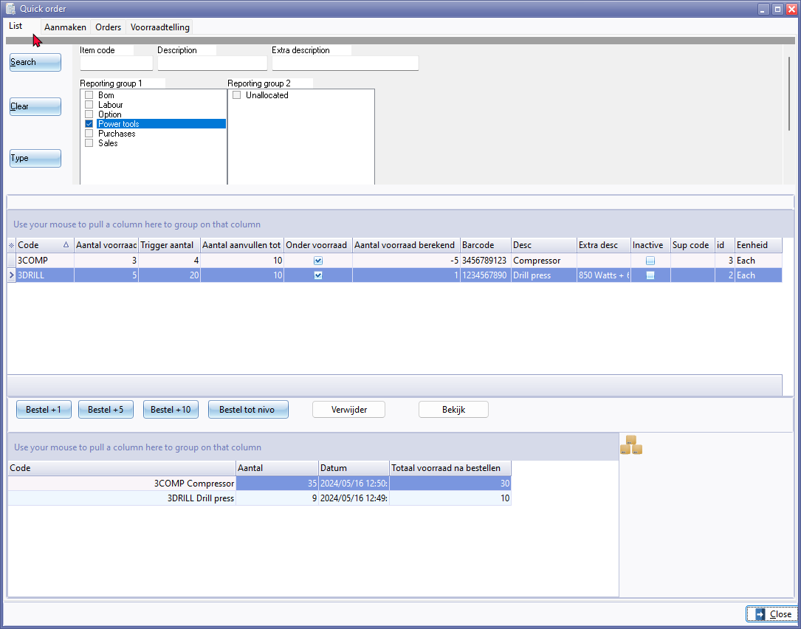
- The details for each stock item will be listed in the following columns:
- Code - Stock code
- Quantity on hand (Aantal voorraad) - The current quantity of stock items available
- Reorder at (Trigger aantal) - The quantity at which the item should be reordered
- Reorder level (Aantal aanvullen tot) - The replenish quantity
- Under stock (Onder voorraad)
- Quantity of stock calculated (Aantal voorraad berekend) -
- Barcode - Barcode of the stock item
- Description - Stock item description
- Extra description - Additional description of the stock item
- Inactive - Status of the stock item (active or inactive)
- Supplier code - Supplier's stock code (if set for the default supplier). Note: If no supplier code exists in this column, it may generate the order to an "Empty account". You may click on the Bekijk (View) button to add the preferred supplier and the supplier's stock code on the Stock form.
- id - Stock item ID (record number)
- Unit - Unit description for purchase and sale
- To order the reorder quantity to the "Reorder level", select an item from the list and click the Bestel tot nivo (Order to level) button.
- To increment the order quantity, use the Bestel +1 (Order +1), Bestel +5 (Order +5), or Bestel +10 (Order +10) buttons.
- Clicking on the order buttons will add the stock items to the bottom half of the QuickOrder screen, with details in the following columns:
- Code - Stock code
- Quantity (Aantal) - Quantity of stock calculated, updated by ordered quantities
- Date (Datum) - System date and time stamp
- Total stock after ordering (Totaal voorraad na bestellen) - Quantities on order
Adding QuickOrder items and quantities on the QuickOrder - List tab will add a Voorraadtelling (StockCount) tab as a fourth tab to the QuickOrder plugin.
Delete an item from the list
Click the Verwijder (Delete) button. A confirmation message will be displayed:
"Weet u het zeker? "
If you are sure, click Yes.
View Stock Item form
To view a stock item, click the Bekijk (View) button. This will open the Stock Item form with the Ledger tab in a separate window, allowing you to view and edit details if necessary.
Generate tab (Aanmaken tab)
Once you are satisfied with the quantities to order on the List tab, navigate to the Generate (Aanmaken) tab.
Click the Genereer dokument(en) (Generate document(s)) button. A log will display the list of stock item codes and quantities ordered, followed by "Orders generated!"
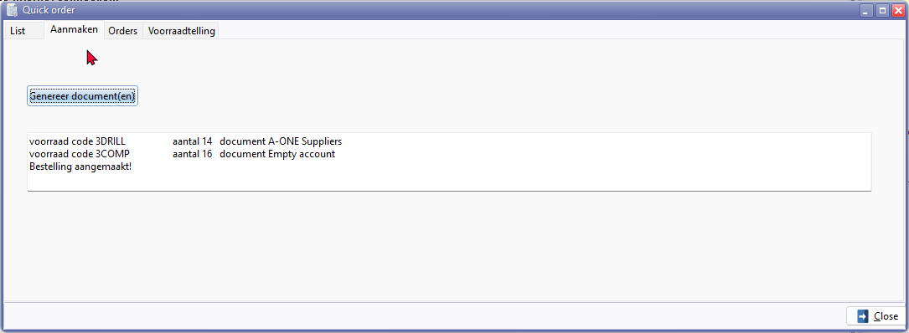
Example text for generated document:
voorraad code 3DRILL aantal 14 document A-ONE Suppliers
voorraad code 3COMP aantal 16 document Empty account
Bestelling aangemaakt!
Orders will be generated for the default supplier as set in the "Preferred supplier1" field of the Stock item form. Note: If no "Preferred supplier1" is set, the order will be generated to an "Empty account".
Accessing generated orders
Once the orders are generated, navigate to Documents on the Default ribbon and select "Order" as the document type. These generated orders will be listed as "Unposted" in the Documents grid.
Editing orders
You may need to edit the orders and change the details where necessary.
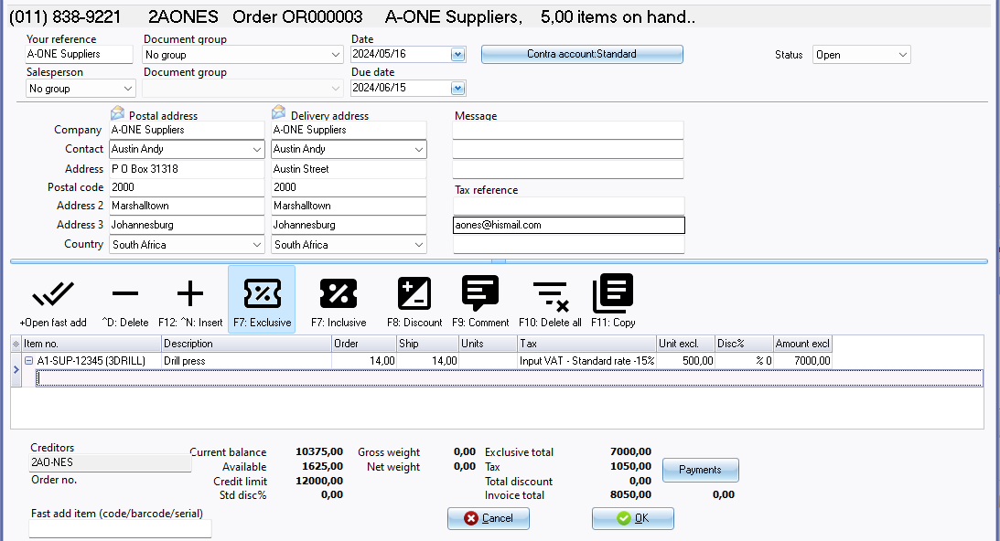
Special attention may be needed for the following:
Document Header:
- Your reference: The supplier's account name will be displayed.
- Document group 1 / Document group 2: Select the appropriate document groups.
- Salesperson: Select the salesperson or the person who handles the orders.
- Date: The system date on which the order was generated.
- Message: Enter up to 3 lines if necessary.
Tip: If you need to change the Document Group 1 / Document Group 2, or the Salesperson, you may use the context menu on the Documents grid for the "Ordeer" document type.
Document Lines:
- The supplier's stock code will precede the stock code (in brackets), and the quantities and tax will already be calculated based on the quantities ordered on the QuickOrder List tab. You may edit these quantities if necessary or add additional items.
- Remarks and Comments: Add any remarks and comments if necessary.
- Discount: Add any discount if necessary.
Once you are satisfied with your generated orders, you may print and send these orders to your suppliers. When the supplier delivers these items, you can confirm these orders and convert them to a purchase.
Changing account
If an order is generated to an "Empty account":
- Go to Documents → Change account in the context menu and select the appropriate supplier account.
- To prevent future occurrences of orders being generated to Empty accounts, navigate to the Stock item form, choose a default supplier in the "Preferred supplier1" field, and add a supplier stock code.
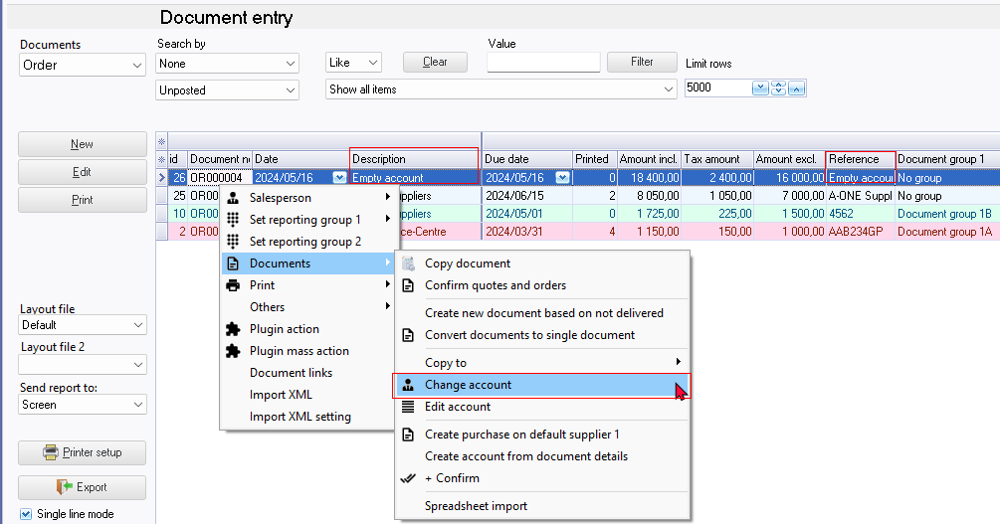
The "Reference" column for these orders, which did not contain a default supplier ("Preferred supplier1") generated by the QuickOrder plugin, will be indicated as "Empty account." To change this "Empty account" reference, edit the "Your reference" field on the order document entry screen.
If the "Your reference" field is left as "Empty account", it will reflect in all relevant reports, such as Reports → Stock → Stock in/out - Documents, in the Documents reference as "Empty account".
Preferred supplier 1 (Default supplier 1) setting
To prevent future occurrences of orders being generated to Empty accounts, navigate to the Stock item form, choose a default supplier in the "Preferred supplier1" field, and add a supplier stock code.
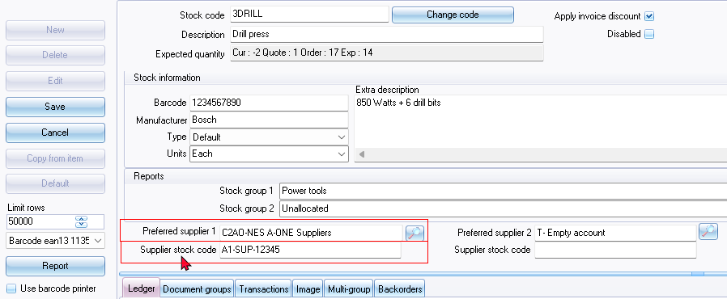
Voorraadtelling (StockCount) tab
Adding QuickOrder items and quantities on the QuickOrder - List tab will add a Voorraadtelling (StockCount) tab as a fourth tab to the QuickOrder plugin.
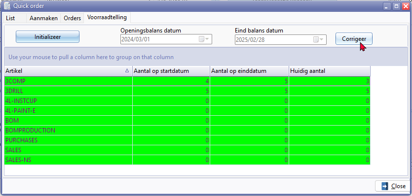
The Voorraadtelling (StockCount) tab will list the stock items with opening balances and closing balances between two dates. These dates correspond to the start and end dates of your financial year:
- Openingbalans datum (Opening balance date)
- Eind balans datum (Closing balance date)
The tab also includes the following two buttons:
- Initializeer (Initialize)
- Corrigeer (Correction)
The Voorraadtelling (StockCount) tab will list the stock items in the following columns:
- Artikel (Item)
- Aantal op startdatum (Quantity on start date)
- Aantal op einddatum (Quantity on end date)
- Huidig aantal (Current quantity)
Changing the stock quantity in the Aantal op einddatum (Quantity on end date) column and clicking the Corrigeer (Correct) button updates the quantity in the Aantal op einddatum (Quantity on end date) column.
This action will create a posted document with "Actief-Q-cor" in the "Your reference" field in the document entry screen. The description in the document lines will automatically be generated as "Actief-Q-cor" for the stock item for which the quantity was changed.
The account will be an "Empty account" as this document correction is only meant to change the stock quantities and is not associated with a specific supplier or creditor account.
The document number will automatically be generated and consists of 7 digits, for example, "ST00001" the first two digits prefixed by "ST" and the document type will be "Stock-"
These stock correction documents will reflect in all relevant reports, such as Reports → Stock → Stock In/Out. in the Documents generated with the QuickOeder Stock coumt tab will list te document number and the reference as generated as "Actief-Q-cor".
To access the posted stock correction document:
- Stock item form - Document groups tab (context menu "Open document")
- Stock item form - Transactions tab (context menu "Open document")
To access print stock correction document:
- Stock item form - Document groups tab (double-click)
- Stock item form - Transactions tab (double-click)
- Search - Central search on Default ribbon. Find the reference, document number or prefix and double-click on the document (Document type) The document type will be indicated as "Sock out Details".
Voorraadtelling (StockCount) tab - Corrections tab
Changing the stock quantity in the Aantal op einddatum (Quantity on end date) column and clicking the Corrigeer (Correct) button updates the quantity in the Aantal op einddatum (Quantity on end date) column.
This action will create a posted document with "Actief-Q-cor" in the "Your reference" field in the document entry screen. The description in the document lines will automatically be generated as "Actief-Q-cor" for the stock item for which the quantity was changed. The account will be an "Empty account" as this document correction is only meant to change the stock quantities and is not associated with a specific supplier or creditor account.
The document number will be automatically generated and consists of 7 digits, prefixed with "ST" (e.g., "ST00001"), and the document type will be "Stock-".
These stock correction documents will reflect in all relevant reports, such as Reports → Stock → Stock In/Out. Documents generated with the QuickOrder StockCount tab will list the document number and the reference as "Actief-Q-cor".
The "Actief-Q-cor" reference or stock description in document entry screens, specific columns in certain tabs of the stock item, document layout files, and reports indicates that this is generated by the QuickOrder plugin for corrections of stock quantities.
To Access the Posted Stock Correction Document:
- Stock item form → Document groups tab: Use the context menu "Open document".
- Stock item form → Transactions tab: Use the context menu "Open document".
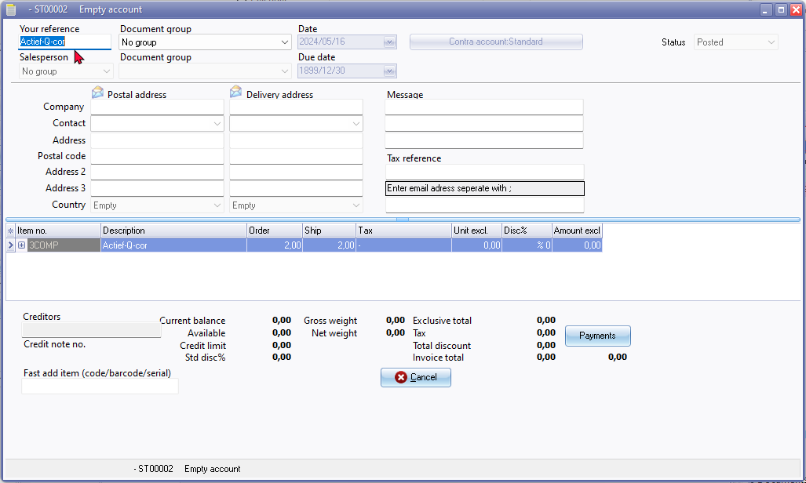
To Print the Stock Correction Document:
- Stock item form → Document groups tab: Double-click the document.
- Stock item form → Transactions tab: Double-click the document.
- Search (Default ribbon): On the central search, find the reference ("Actief-Q-cor"), document number, or prefix ("ST"), and double-click on the document. The document type will be indicated as "Stock out Details".
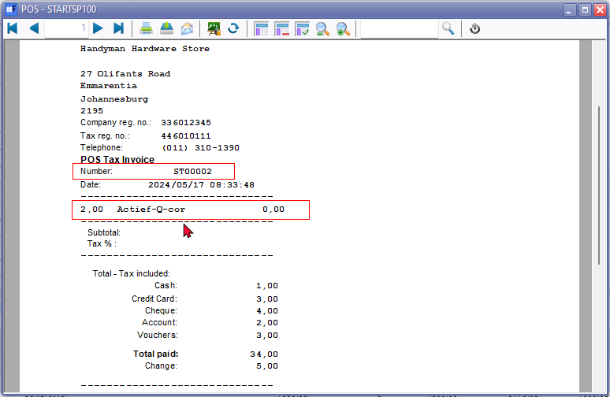
Error - Closed Dataset
ZQGenSearch: Cannot perform this operation on a closed dataset error is replicated when clicking on the Voorraadtelling tab.
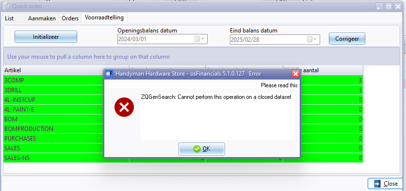
Orders tab
When the Quick order plugin is initiated, and the "Just quickorder" option on the "Setup QuickOrder" screen is not selected, the entire QuickOrder module (comprising three tabs: List, Generate documents, and Orders) will be available. You may click on the Orders tab.
When the Quick order plugin is initiated, and the "Just quickorder" option on the "Setup QuickOrder" screen is selected, only the Orders component of the entire QuickOrder plugin module will be available.
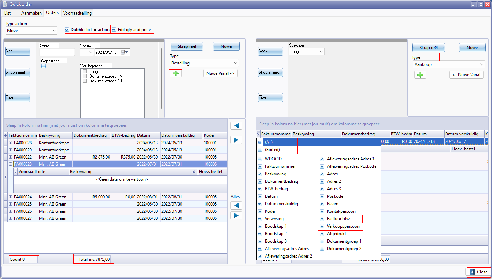
Nuwe - Selecteer rekening (lookup titlebar caption)
Type action
- Move 21022
- Copy 3293 / 21010
Dubbleclick = action
Edit qty and price
Columns
- (All) 20055
- (Sorted)
- WDOCID
- Factuur btw
- Afgedrukt 2964